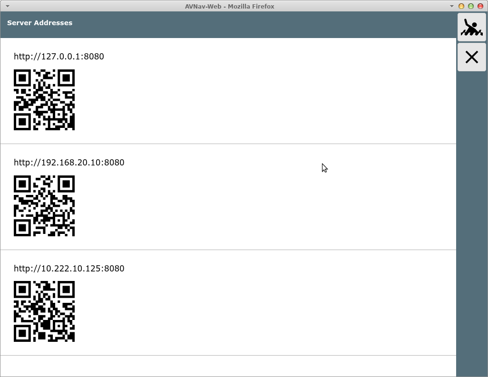

All addresses that can be used to connect to AvNav are shown here. In
normal set ups when AvNav is working as an access point and you are using
the avnav wifi the relevant addresses start with 192.168....
If you additionally configured an external wifi
connection you can also have an address from this network.
By scanning the QR code with another devices you can easily connect to the AvNav server. You only have to decice which one is the correct address for you - depending on the network you are connected to.
This way of connection is an alternative to the variants described in the Introduction.